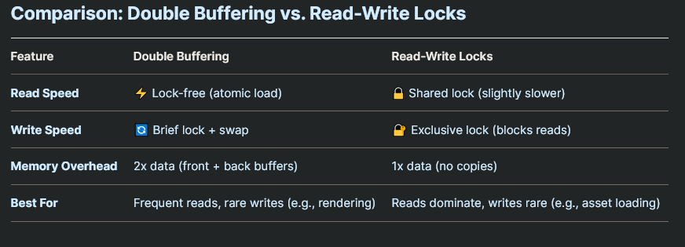

-
Synchronization primitives can come from multiple layers of abstraction; some are provided directly by the operating system, while others are part of programming language libraries or runtime environments.
Operating System (OS) Level
-
Most low-level synchronization primitives originate from the OS.
-
Provided through system calls or kernel APIs .
-
Examples:
-
pthread_mutex,pthread_cond(POSIX Threads on Unix/Linux) -
WaitForSingleObject,CreateSemaphore(Windows API) -
futex(Linux-specific syscall)
-
-
Typically used in C/C++, or by language runtimes internally.
-
Responsibilities of the OS :
-
Manage thread scheduling.
-
Handle context switching and resource blocking.
-
Provide kernel support for locks, semaphores, etc.
-
Programming Language Runtime
-
Languages abstract OS primitives or implement their own strategies.
-
May use OS-level primitives under the hood or optimize further in user-space.
User-Space Libraries
-
Some libraries provide synchronization mechanisms independent of the OS.
-
Often optimized for performance (e.g., lock-free, wait-free algorithms).
-
Examples:
-
Intel TBB (Threading Building Blocks)
-
Boost.Thread (C++)
-
Atomic Operations / Lock-free
-
Low-level CPU-supported operations that are completely indivisible.
-
No locking required.
-
-
I think this exemplifies a bit the necessity of using atomic operations.
-
Atomic Operations
-
See Odin#Atomics .
-
I'm assuming the operations stated here are universal.
-
Atomic Memory Order
-
Modern CPU's contain multiple cores and caches specific to those cores. When a core performs a write to memory, the value is written to cache first. The issue is that a core doesn't typically see what's inside the caches of other cores. In order to make operations consistent CPU's implement mechanisms that synchronize memory operations across cores by asking other cores or by pushing data about writes to other cores.
-
Due to how these algorithms are implemented, the stores and loads performed by one core may seem to happen in a different order to another core. It also may happen that a core reorders stores and loads (independent of how compiler put them into the machine code). This can cause issues when trying to synchronize multiple memory locations between two cores. Which is why CPU's allow for stronger memory ordering guarantees if certain instructions or instruction variants are used.
-
Relaxed:-
The memory access (load or store) is unordered with respect to other memory accesses. This can be used to implement an atomic counter. Multiple threads access a single variable, but it doesn't matter when exactly it gets incremented, because it will become eventually consistent.
-
-
Consume:-
No loads or stores dependent on a memory location can be reordered before a load with consume memory order. If other threads released the same memory, it becomes visible.
-
-
Acquire:-
No loads or stores on a memory location can be reordered before a load of that memory location with acquire memory ordering. If other threads release the same memory, it becomes visible.
-
-
Release:-
No loads or stores on a memory location can be reordered after a store of that memory location with release memory ordering. All threads that acquire the same memory location will see all writes done by the current thread.
-
-
Acq_Rel:-
Acquire-release memory ordering: combines acquire and release memory orderings in the same operation.
-
-
Seq_Cst:-
Sequential consistency. The strongest memory ordering. A load will always be an acquire operation, a store will always be a release operation, and in addition to that all threads observe the same order of writes.
-
-
Note(i386, x64) :
-
x86 has a very strong memory model by default. It guarantees that all writes are ordered, stores and loads aren't reordered. In a sense, all operations are at least acquire and release operations. If
lockprefix is used, all operations are sequentially consistent. If you use explicit atomics, make sure you have the correct atomic memory order, because bugs likely will not show up in x86, but may show up on e.g. arm. More on x86 memory ordering can be found here .
-
Barrier
-
Blocks a group of threads until all have reached the same point of execution.
-
Once all threads arrive, they are released simultaneously.
-
Enables multiple threads to synchronize the beginning of some computation.
-
When
barrier_waitprocedure is called by any thread, that thread will block the execution, until all threads associated with the barrier reach the same point of execution and also callbarrier_wait. -
When a barrier is initialized, a
thread_countparameter is passed, signifying the amount of participant threads of the barrier. The barrier also keeps track of an internal atomic counter. When a thread callsbarrier_wait, the internal counter is incremented. When the internal counter reachesthread_count, it is reset and all threads waiting on the barrier are unblocked. -
This type of synchronization primitive can be used to synchronize "staged" workloads, where the workload is split into stages, and until all threads have completed the previous threads, no thread is allowed to start work on the next stage. In this case, after each stage, a
barrier_waitshall be inserted in the thread procedure.
Semaphore
-
A counter-based synchronization primitive.
-
Can allow multiple threads to access a resource (unlike a mutex, which is binary).
-
Types:
-
Counting Semaphore :
-
Allows
nconcurrent accesses.
-
-
Binary Semaphore :
-
Functions like a mutex.
-
-
-
When waited upon, semaphore blocks until the internal count is greater than zero, then decrements the internal counter by one. Posting to the semaphore increases the count by one, or the provided amount.
-
This type of synchronization primitives can be useful for implementing queues. The internal counter of the semaphore can be thought of as the amount of items in the queue. After a data has been pushed to the queue, the thread shall call
sema_post()procedure, increasing the counter. When a thread takes an item from the queue to do the job, it shall callsema_wait(), waiting on the semaphore counter to become non-zero and decreasing it, if necessary.
Benaphore
-
A benaphore is a combination of an atomic variable and a semaphore that can improve locking efficiency in a no-contention system. Acquiring a benaphore lock doesn't call into an internal semaphore, if no other thread is in the middle of a critical section.
-
Once a lock on a benaphore is acquired by a thread, no other thread is allowed into any critical sections, associted with the same benaphore, until the lock is released.
Recursive Benaphore
-
A recursive benaphore is just like a plain benaphore, except it allows reentrancy into the critical section.
-
When a lock is acquired on a benaphore, all other threads attempting to acquire a lock on the same benaphore will be blocked from any critical sections, associated with the same benaphore.
-
When a lock is acquired on a benaphore by a thread, that thread is allowed to acquire another lock on the same benaphore. When a thread has acquired the lock on a benaphore, the benaphore will stay locked until the thread releases the lock as many times as it has been locked by the thread.
Auto Reset Event
-
Represents a thread synchronization primitive that, when signalled, releases one single waiting thread and then resets automatically to a state where it can be signalled again.
-
When a thread calls
auto_reset_event_wait, its execution will be blocked, until the event is signalled by another thread. The call toauto_reset_event_signalwakes up exactly one thread waiting for the event.
Mutex (Mutual exclusion lock)
-
A Mutex is a mutual exclusion lock It can be used to prevent more than one thread from entering the critical section, and thus prevent access to same piece of memory by multiple threads, at the same time.
-
Mutex's zero-initializzed value represents an initial, unlocked state.
-
If another thread tries to acquire the lock, while it's already held (typically by another thread), the thread's execution will be blocked, until the lock is released. Code or memory that is "surrounded" by a mutex lock and unlock operations is said to be "guarded by a mutex".
-
Ensures only one thread accesses a critical section at a time.
-
If another thread tries to lock an already locked mutex, it blocks until the mutex is released.
-
Protect shared variables from concurrent modification.
Problems Prevented by Mutex
-
Race conditions:
-
When multiple threads access and modify a resource simultaneously in an unpredictable way.
-
-
Data inconsistency:
-
Ensures that operations in a critical section are atomic.
-
Challenges of Using Mutex
-
Deadlock:
-
Occurs when two or more threads are stuck waiting for each other to release mutexes.
-
-
Starvation:
-
A thread may wait indefinitely if mutexes are constantly acquired by others.
-
What a Mutex Actually Blocks
-
It blocks other threads from locking the same mutex.
-
If Thread A locks
mutex, Thread B will wait if it tries to lockmutexuntil Thread A unlocks it. -
It does not block threads that don’t try to lock
mutex.
-
-
It does not block the entire function or thread.
-
The rest of your code (outside the mutex) runs normally.
-
Only the critical section (between
lock/unlock) is protected.
-
-
Mutexes Protect Data, Not Functions or Threads.
textures: map[u32]Texture2D textures_mutex: sync.Mutex // Thread A (locks mutex, modifies textures) sync.mutex_lock(&textures_mutex) // 🔒 textures[123] = load_texture("test.png") // Protected sync.mutex_unlock(&textures_mutex) // 🔓 // Thread B (also needs the mutex to touch textures) sync.mutex_lock(&textures_mutex) // ⏳ Waits if Thread A holds the lock unload_texture(textures[123]) sync.mutex_unlock(&textures_mutex)-
The mutex only blocks Thread B if it tries to lock
textures_mutexwhile Thread A holds it. -
If Thread B runs code that doesn’t lock
textures_mutex, it runs freely.
-
-
Mutexes Are Not "Global Barriers". If two threads use different mutexes, they don’t block each other:
// Thread A (uses mutex_x) sync.mutex_lock(&mutex_x) // 🔒 // ... do work ... sync.mutex_unlock(&mutex_x) // 🔓 // Thread B (uses mutex_y) sync.mutex_lock(&mutex_y) // ✅ Runs in parallel (no conflict) // ... do work ... sync.mutex_unlock(&mutex_y)
Example: Task Queue
// --- Shared Task System (Thread-safe) ---
Task_Type :: enum {
UNLOAD_TEXTURE,
LOAD_TEXTURE,
SWAP_SCENE_TEXTURES,
// Add more as needed...
}
Task :: struct {
type: Task_Type,
// Add payload if needed (e.g., texture IDs)
}
task_queue: [dynamic]Task
task_mutex: sync.Mutex
// Thread A (Game Thread): Processes tasks
process_tasks :: proc() {
// 🔒 LOCK the mutex to safely read the queue
sync.mutex_lock(&task_mutex)
defer sync.mutex_unlock(&task_mutex) // 🔓 Unlock when done
// Make a local copy of tasks (optional but cleaner)
tasks_to_process := task_queue[:]
clear(&task_queue) // Empty the shared queue
// 🔓 Mutex unlocked here (defer runs)
// Process tasks WITHOUT holding the mutex
for task in tasks_to_process {
handle_task(task) // e.g., UnloadTexture(...)
}
}
// Thread B (Network Thread): Adds a task
add_task :: proc(new_task: Task) {
// 🔒 LOCK the mutex to safely append
sync.mutex_lock(&task_mutex)
defer sync.mutex_unlock(&task_mutex) // 🔓 Unlock when done
append(&task_queue, new_task)
}
Example: Read and Write
-
READ: MAKES A COPY (wrapped in a mutex), WRITE: MUTEX GUARD
-
For read operations, make a copy of the data to read; for write operations, use a mutex.
-
// Shared data with mutex and atomic pointer for efficient reads
std::mutex data_mutex;
Data* atomic_data_ptr; // Atomic pointer for thread-safe access
// Read Job
void ReadJob() {
Data local_copy;
{
std::lock_guard<std::mutex> lock(data_mutex); // Optional: Only if data isn't atomically swappable
local_copy = *atomic_data_ptr; // Copy under mutex (or use atomic load)
}
// Use local_copy safely...
}
// Write Job
void WriteJob() {
std::lock_guard<std::mutex> lock(data_mutex);
// Modify data...
}
Futex (Fast Userspace Mutex)
-
Allows most lock/unlock operations to be done in userspace.
-
System call is only used for contention resolution.
-
Use case : Efficient locking on Linux systems.
User-space atomic spin (with
cpu_relax
) vs Futex
-
For very short waits (tens–thousands of CPU cycles) a user-space atomic spin (with
cpurelax) is lower latency than a futex because it avoids syscalls and context switches. -
For longer waits (microseconds and above, or whenever contention is non-trivial) a futex is far better overall because it blocks the thread in the kernel and does not burn CPU.
One Shot Event
-
One-shot event.
-
A one-shot event is an associated token which is initially not present:
-
The
one_shot_event_waitblocks the current thread until the event is made available Theone_shot_event_signalprocedure automatically makes the token available if its was not already.
Parker
- A Parker is an associated token which is initially not present:
-
The
parkprocedure blocks the current thread unless or until the token is available, at which point the token is consumed. Thepark_with_timeoutprocedures works the same asparkbut only blocks for the specified duration. Theunparkprocedure automatically makes the token available if it was not already.
Spinlock (Spin until Mutex is unlocked)
-
Like a mutex, but instead of blocking, it repeatedly checks (spins) until the lock becomes available.
-
Low overhead but inefficient if held for long.
-
Use case : Short critical sections on multiprocessor systems.
Read-Write Mutex / Read-Write Lock
Naming
-
A read–write lock (RW lock) lets many readers hold the lock concurrently but only one writer at a time. Calling it a read–write mutex is common and acceptable; it’s a mutual-exclusion primitive with two modes (shared/read and exclusive/write).
Read-Write Mutex
-
Allows multiple readers or one writer , but not both.
- Read-write mutual exclusion lock. -
An
RW_Mutexis a reader/writer mutual exclusion lock. The lock can be held by any number of readers or a single writer. -
This type of synchronization primitive supports two kinds of lock operations:
-
Exclusive lock (write lock)
-
Shared lock (read lock)
-
-
When an exclusive lock is acquired by any thread, all other threads, attempting to acquire either an exclusive or shared lock, will be blocked from entering the critical sections associated with the read-write mutex, until the exclusive owner of the lock releases the lock.
-
When a shared lock is acquired by any thread, any other thread attempting to acquire a shared lock will also be able to enter all the critical sections associated with the read-write mutex. However threads attempting to acquire an exclusive lock will be blocked from entering those critical sections, until all shared locks are released.
How it works internally
-
Most efficient implementations are user-space fast paths plus a kernel-assisted wait path.
-
State word (atomic integer).
-
Encodes reader count and writer flag (and sometimes waiter counts or ticket/sequence numbers).
-
Example encoding:
-
low bits or a counter = number of active readers
-
one bit = writer-active flag
-
optional fields = number of waiters or ticket counters
-
-
-
Fast path (uncontended):
-
AcquireRead: atomically increment reader count if writer bit is 0. -
AcquireWrite: atomically set writer bit (CAS) if reader count is 0 and writer bit was 0; if successful, you’re owner.
-
-
Slow path (contended):
-
If fast path fails (writer present or racing), the thread either spins briefly or goes to sleep on a wait queue associated with the lock (on Linux typically via
futex, on Windows via wait-on-address / kernel wait objects). -
Waiting threads sleep until a waking operation (writer release or explicit wake) changes the state and wakes them.
-
-
Release:
-
ReleaseRead: atomically decrement reader count. If reader count becomes 0 and a writer is waiting, wake one writer. -
ReleaseWrite: clear writer bit and wake either waiting writers (writer-preferring) or all readers (reader-preferring / fair), depending on policy.
-
Comparison
RW_Mutex
vs Double-Buffering
-

.
SRW Lock (Slim Reader/Writer lock) (Windows only)
-
It's a lightweight synchronization primitive in Windows that allows multiple concurrent readers or a single writer.
-
Supports shared mode (multiple readers) and exclusive mode (one writer).
-
Unfair by design; a writer may bypass waiting readers.
-
Very small footprint (pointer-sized structure).
-
Non-reentrant: a thread must not acquire the same SRW lock twice in the same mode.
Once
-
Once action.
-
Oncea synchronization primitive, that only allows a single entry into a critical section from a single thread.
Ticket Mutex
-
Ticket lock.
-
A ticket lock is a mutual exclusion lock that uses "tickets" to control which thread is allowed into a critical section.
-
This synchronization primitive works just like spinlock, except that it implements a "fairness" guarantee, making sure that each thread gets a roughly equal amount of entries into the critical section.
-
This type of synchronization primitive is applicable for short critical sections in low-contention systems, as it uses a spinlock under the hood.
Condition Variable
-
Allows threads to sleep and be awakened when a specific condition is true.
-
It's a rendezvous point for threads waiting for signalling the occurence of an event. Condition variables are used in conjuction with mutexes to provide a shared access to one or more shared variable.
-
A typical usage of condition variable is as follows:
-
A thread that intends to modify a shared variable shall:
-
Acquire a lock on a mutex.
-
Modify the shared memory.
-
Release the lock.
-
Call
cond_signalorcond_broadcast.
-
-
A thread that intends to wait on a shared variable shall:
-
Acquire a lock on a mutex.
-
Call
cond_waitorcond_wait_with_timeout(will release the mutex). -
Check the condition and keep waiting in a loop if not satisfied with result.
-
-
Wait Group
-
Wait group is a synchronization primitive used by the waiting thread to wait, until all working threads finish work.
-
The waiting thread first sets the number of working threads it will expect to wait for using
wait_group_addcall, and start waiting usingwait_group_waitcall. When worker threads complete their work, each of them will callwait_group_done, and after all working threads have called this procedure, the waiting thread will resume execution. -
For the purpose of keeping track whether all working threads have finished their work, the wait group keeps an internal atomic counter. Initially, the waiting thread might set it to a certain non-zero amount. When each working thread completes the work, the internal counter is atomically decremented until it reaches zero. When it reaches zero, the waiting thread is unblocked. The counter is not allowed to become negative.